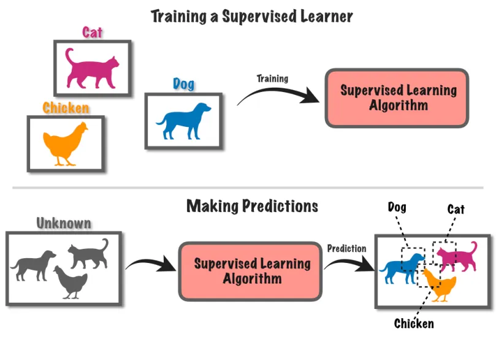
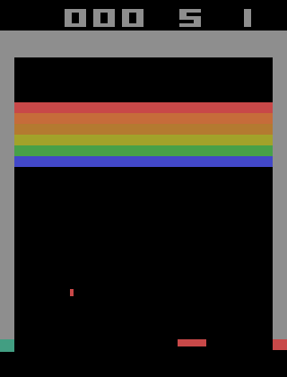

UNIVERSITE PARIS VIII - VINCENNES-SAINT-DENIS
DIRECTION DES SYSTEMES D'INFORMATION ET DU NUMERIQUE (DSIN)
Atelier IA
1. Introduction to Natural Language Processing in Python
sanghun BANG
Le 14 janvier 2025
Sommaire
- Le traitement du langage naturel (NLP)
- Tokenisation des mots
- Identification simple des sujets
- L'apprentissage automatique
- Créer un classificateur de "fake news"
- Prochain atelier
Le traitement du langage naturel (NLP)
“C'est un domaine d'√©tude qui se concentre sur la compr√©hension du langage √† l'aide de statistiques et d'ordinateurs. ”
- Applications du NLP : chatbots, traduction, analyse des sentiments, etc.
Tokenisation des mots
“Qu'est-ce que la tokenisation ? Transformer une cha√Æne de caract√®res ou un document en tokens (petits morceaux). ”
Tokenisation des mots
Identification simple des sujets
Sac de mots (Bag-of-words)
- Méthode de base pour trouver les sujets dans un texte
- Il faut d'abord créer des jetons (tokens) en utilisant la tokenisation, puis compter tous les jetons.
- Plus un mot est fréquent, plus il peut être important.
- Cela peut être un excellent moyen de déterminer les mots significatifs dans un texte.
- Exercice
Identification simple des sujets
Simple text preprocessing
- Aide à améliorer les données d'entrée -> lors de l'application de l'apprentissage automatique (machine learning) ou d'autres méthodes statistiques
- Exemple : Tokenisation pour créer un sac de mots, Conversion des mots en minuscules
- Lemmatisation/Racinisation(stemming) -> Réduction des mots à leurs racines
- Suppression des mots vides, de la ponctuation ou des tokens indésirables
- Exercice
Identification simple des sujets
Qu'est-ce qu'un vecteur de mots ?
Représentation numérique
Dimensionalité
Similarité sémantique
Relations contextuelles
Identification simple des sujets
Gensim
- Bibliothèque NLP open-source populaire
- Utilise des modèles académiques de pointe pour réaliser des tâches complexes
- Construction de vecteurs de documents ou de mots
- Identification des sujets et comparaison de documents
- Exercice
Identification simple des sujets
Fréquence du Terme (TF)
“La fr√©quence du terme (TF) mesure √† quel point un mot appara√Æt fr√©quemment dans un document donn√©. Elle est souvent utilis√©e pour quantifier l'importance d'un mot au sein d'un document sp√©cifique. ”
Identification simple des sujets
Fréquence du Terme (TF)
Exemple
Si un document ùëë est ["le", "chat", "est", "sur", "le", "tapis"] et que le mot le appara√Æt 2 fois dans un document de 6 mots :
TF(le,d)=2/6=0,33
Identification simple des sujets
Inverse de la Fréquence des Documents (IDF)
“L'IDF mesure l'importance d'un terme dans l'ensemble des documents. Plus un mot appara√Æt dans de nombreux documents, moins il est consid√©r√© comme important, car il est trop courant. L'IDF permet donc de r√©duire l'importance des termes fr√©quents. ”
Identification simple des sujets
Inverse de la Fréquence des Documents (IDF)
Exemple
Si l'ensemble des documents est constitué de 1000 documents, et que le mot chat apparaît dans 50 documents :
IDF(chat)=log(1000/50)=log(20) = environ 1,30
Identification simple des sujets
TF-IDF
“Le TF-IDF combine les deux valeurs pr√©c√©dentes pour √©valuer l'importance d'un mot dans un document tout en tenant compte de sa fr√©quence dans l'ensemble des documents. ”
Identification simple des sujets
TF-IDF
- Si la TF de "le" est 0.33 et que l'IDF de "le" est 0, alors
- TF-IDF(le,d) = 0,33 * 0 = 0
- Cela signifi que le mot "le" est peu important, car il apparait fréquemment dans tous les documents.
- Si la TF de "chat" est 0,33 et l'IDF de "chat" est 1,30, alors
- TF-IDF(chat,d) = 0,33 * 1,30 = 0,429
- Cela montre que le mot "chat" est plus important dans le document, car il est plus rare dans l'ensemble des documents.
L'apprentissage automatique
L'apprentissage supervisé/non-supervisé

L'apprentissage automatique
Par renforcement

Playing Atari with Deep Reinforcement Learning [Mnih et al., 2013]
Créer un classificateur de "fake news"
Créer un classificateur de "fake news"
Charger les données
- Charge un fichier CSV contenant les données d'articles de presse avec leurs labels
- Données attendues : text, label(fake, real) par exemple
Créer un classificateur de "fake news"
Préparer les données
- X: contient le texte des artilces
- y: contien les labels
- Entrainement(80%), test(20%)
Créer un classificateur de "fake news"
Pipeline NLP

- CountVectoriser: Convertit les textes en vecteurs numériques en comptant la fréquence des mots
- TifdfTransformer: Calcul les poids TF-IDF pour chaque mot, ce qui réduit l'importance des mots fréquents
- LogisticRegression: Utilise la régression logistique comme modèle de classification
Créer un classificateur de "fake news"
Entrainer/test le model
- La matrice de confusion donne un aperçu détaillé des performances du modèle
- Les lignes représentent les classes réelles.
- Les colonnes représentent les classes prédites.
Créer un classificateur de "fake news"
La matrice de confusion
| Prédit(Positif) | Prédit(Négatif) | |
|---|---|---|
| Réel(Positif) | VP (601) | FN (32) |
| Réel(Négatif) | FP (63) | VN (571) |
Créer un classificateur de "fake news"
L'accuracy (précision)
Créer un classificateur de "fake news"
Entrainer/test le model

- Précision (Precision) : Proportion de prédictions correctes pour chaque classe.
- Rappel (Recall) : Capacité du modèle à identifier correctement les exemples d'une classe donnée.
- F1-score : Moyenne harmonique de la précision et du rappel.
Créer un classificateur de "fake news"
Code
Prochain atelier
- 1. Introduction to Natural Language Processing in Python
- 2. Introduction to LLMs in Python
- 3. Working with Hugging Face
- 4. Intermediate Deep Learning with PyTorch
- 5. Deep Learning for Text with PyTorch
- 6. Building Chatbots in Python
- 7. Working with Llama 3
- 8. Transformer Models with PyTorch
- 9. Developing LLM Applications with LangChain
- 10. Retrieval Augmented Generation (RAG) with LangChain